Open Sound Control
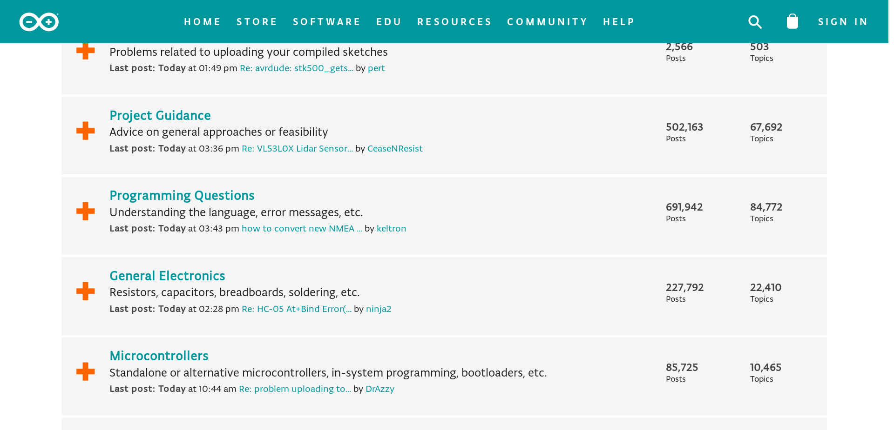
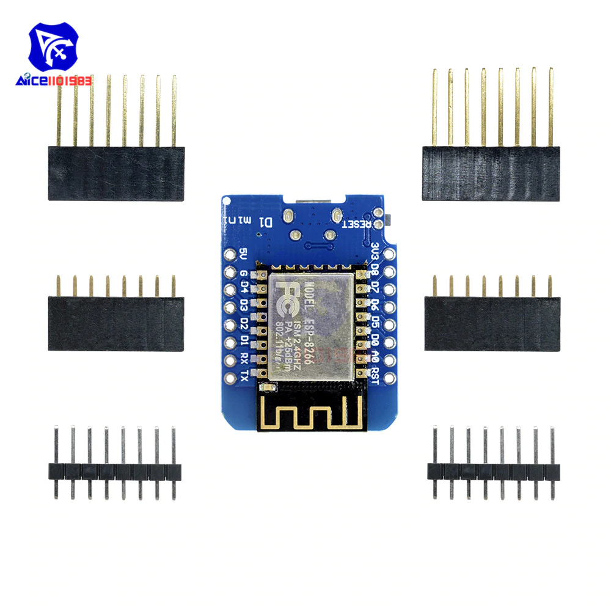
Open Sound Control
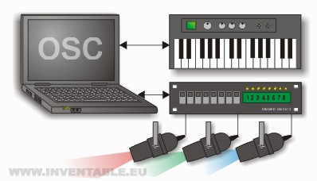
| filaire (ethernet) | sans fil (wifi) | les deux |
|  | 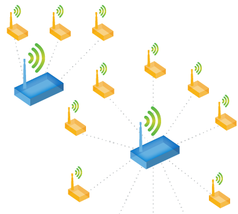 | 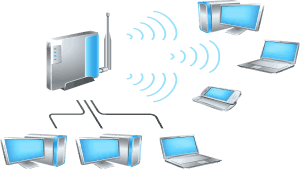 |
| 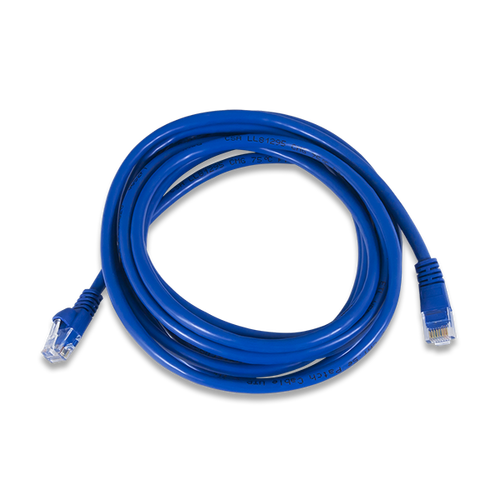 | 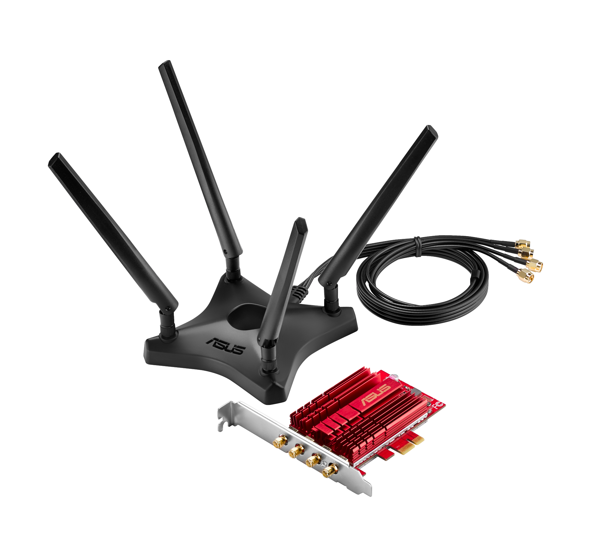 |
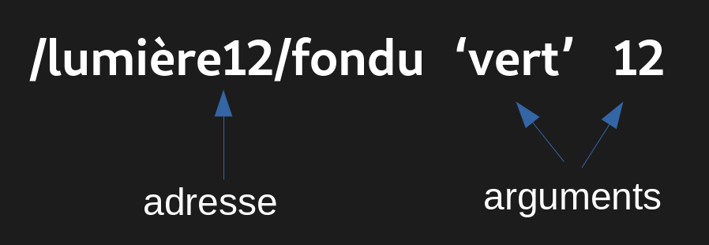
addresse : utilisée pour router les messages
arguments : autant qu'on veut, différents types
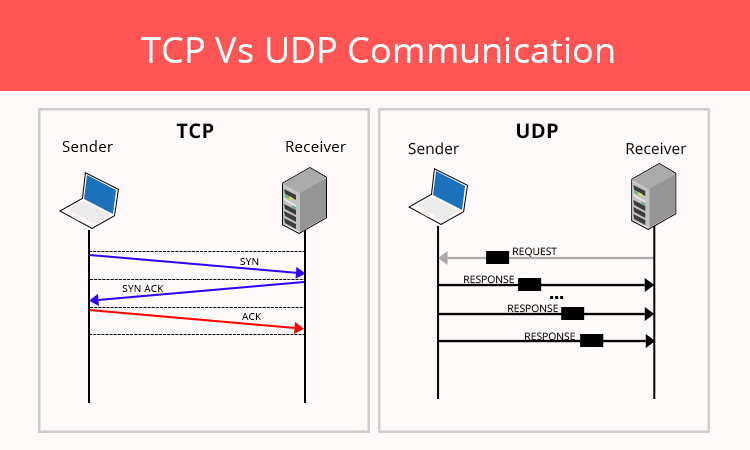
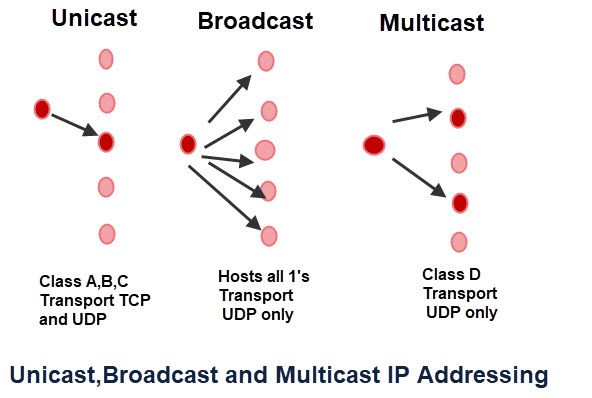
installer arduino
installer les paquets pour ESP8266
installer la librairie OSC
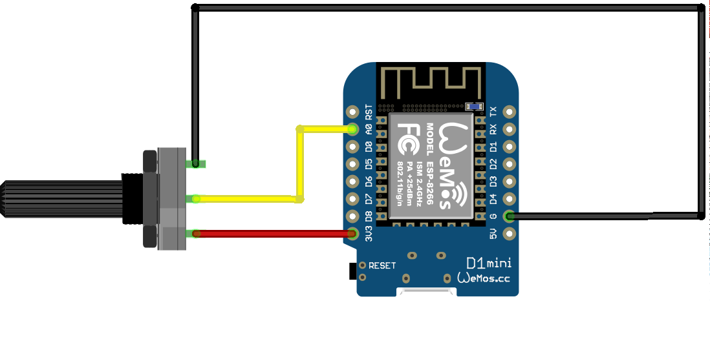
lecture du capteur
void setup() {
Serial.begin(115200); // ouverture du port série
}
void loop() {
int valeurActuelle = analogRead(0);
Serial.print("valeur du potentiomètre : ");
Serial.println(valeurActuelle);
delay(100);
}
lecture intelligente du capteur
static int tolerance = 2;
int valeurPrecedente = 0;
void setup() {
Serial.begin(115200);
}
void loop() {
int valeurActuelle = analogRead(0); // lecture du port analogique
if (valeurActuelle < valeurPrecedente-tolerance || valeurActuelle > valeurPrecedente+tolerance) { // si la valeur à changée significativement
Serial.print("valeur changée : ");
Serial.println(valeurActuelle);
valeurPrecedente = valeurActuelle; // la tendance d'hier est le vintage d'aujourd'hui
delay(5);
}
}
envoi des données en UDP
#include // fonctions wifi : connection en station ou point d'accès, addresses IP ...
#include // création de paquets UDP et envoi sur le réseau
static char* nomDuReseau = "malinette"; // attention, sensible à la casse
static char* motDePasse = "malinette666"; // idem
static const int portUDP = 8000; // port auquel les paquets seront envoyés, doit être identique à celui du récepteur
static IPAddress IPcible = IPAddress({10,0,0,255});// addresse à laquelle les messages sont envoyés, ici en broadcast
WiFiUDP UDP;
void setup() {
Serial.begin(115200); // ouverture du port série
while (true) { // tant que la connection n'est pas établie, on restera coincé ici
Serial.println("\n\nConnection à " + String(nomDuReseau) + " ...");
WiFi.mode(WIFI_STA); // mode station : se connecte à un point d'accès existant
WiFi.begin(nomDuReseau, motDePasse); // tentative de connection
ESP.wdtFeed(); // évite de rebooter l'ESP si l'opération le bloque trop longtemps
yield(); // rends la main à l'ESP
if ( WiFi.waitForConnectResult() == WL_CONNECTED ) {break;} // si la connection est établie, on sort de la boucle infinie
}
Serial.print("connecté, addresse IP : ");
Serial.println(WiFi.localIP()); // addresse IP attribuée à l'ESP par le routeur wifi auquel il se connecte
UDP.begin(portUDP);
}
void loop() {
Serial.println("coucou !");
UDP.beginPacket(IPcible, portUDP);
UDP.write("coucou !");
UDP.endPacket();
yield(); // rends la main à l'ESP
delay(1000); // le paquet sera envoyé toutes les secondes
}
envoi des données en OSC
#include // fonctions wifi : connection en station ou point d'accès, addresses IP ...
#include // création de paquets UDP et envoi sur le réseau
#include // gestion du protocol OSC en envoi et réception
static char* nomDuReseau = "malinette"; // attention, sensible à la casse
static char* motDePasse = "malinette666"; // idem
static const int portOSC = 8000; // port auquel les paquets seront envoyés, doit être identique à celui du récepteur
static IPAddress IPcible = IPAddress({10,0,0,255});// addresse à laquelle les messages sont envoyés, ici en broadcast
static int tolerance = 2; // différence minimale entre la la valeur actuelle et la précédente à partir de laquelle les messages seront envoyés
int valeurPrecedente = 0; // stockera la valeur précédente
WiFiUDP UDP;
void setup() {
Serial.begin(115200); // ouverture du port série
while (true) { // tant que la connection n'est pas établie, on restera coincé ici
Serial.println("\n\nConnection à " + String(nomDuReseau) + " ...");
WiFi.mode(WIFI_STA); // mode station : se connecte à un point d'accès existant
WiFi.begin(nomDuReseau, motDePasse); // tentative de connection
ESP.wdtFeed(); // évite de rebooter l'ESP si l'opération le bloque trop longtemps
yield(); // rends la main à l'ESP
if ( WiFi.waitForConnectResult() == WL_CONNECTED ) {break;} // si la connection est établie, on sort de la boucle infinie
}
Serial.print("connecté, addresse IP : ");
Serial.println(WiFi.localIP()); // addresse IP attribuée à l'ESP par le routeur wifi auquel il se connecte
}
void loop() {
int valeurActuelle = analogRead(0); // lecture du port analogique
if (valeurActuelle < valeurPrecedente-tolerance || valeurActuelle > valeurPrecedente+tolerance) { // si la valeur à changée significativement
envoieOSC(valeurActuelle);
valeurPrecedente = valeurActuelle; // la tendance d'hier est le vintage d'aujourd'hui
}
yield(); // rends la main à l'ESP
delay(2); // une courte sieste lui permettra de travailler plus longtemps
}
void envoieOSC(int valeur) {
Serial.print("envoie la valeur "); Serial.println(valeur);
static char* addresseOSC = "/monOSC"; // l'addresse OSC doit correspondre à ce que le destinataire attends
OSCMessage* message = new OSCMessage(addresseOSC); // création d'un nouveau message vide
message->add((float) valeur/1024.0f);// on ajoute la valeur sous forme d'un float entre 0 et 1
UDP.beginPacket(IPcible, portOSC); // création d'un paquet UDP vide
message->send(UDP); // envoi du message OSC en UDP
UDP.endPacket(); // le paquet est refermé (sans ruban)
delete(message); // on nettoie derrière soi pour éviter de mauvaises surprises
ESP.wdtFeed();
yield();
}
code de l'INIT
code de nos projets
l'incontournable wiki